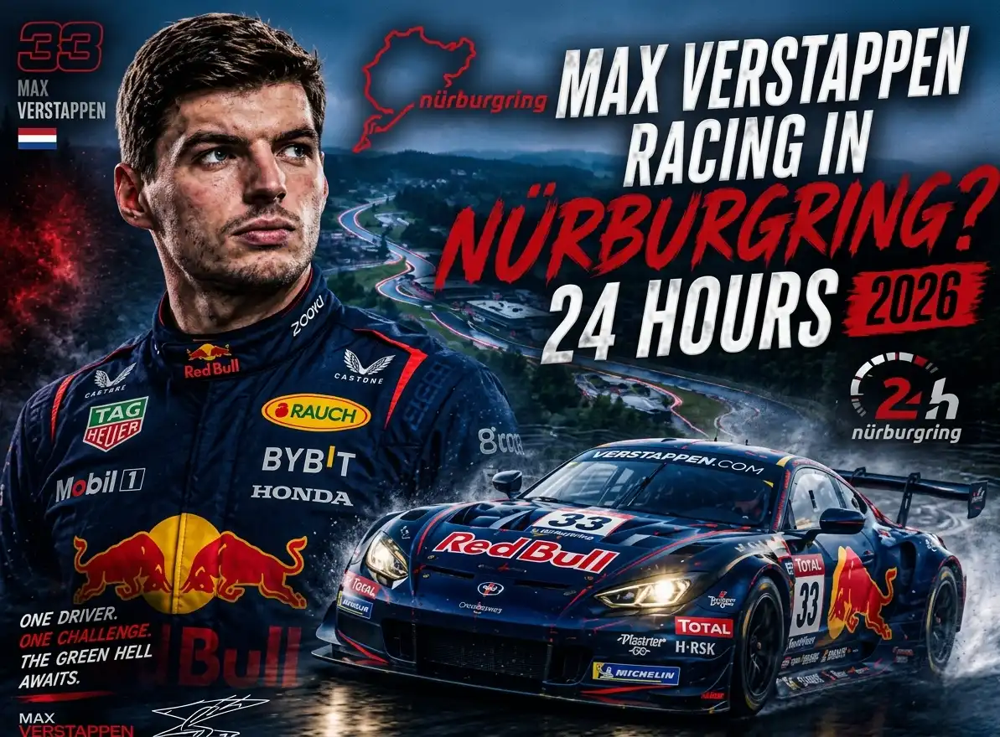

Lastest race updates and Records

The 2026 Nürburgring 24 Hours is one of the most demanding endurance races in the world, held on the legendary Nürburgring Nordschleife in Germany. The race challenges drivers to compete continuously for 24 hours, testing their speed, endurance, teamwork, and reliability under changing weather and track conditions.
In 2026, Verstappen.com Racing competed in the event, continuing its commitment to top-level GT endurance racing. The race highlighted the team's dedication to precision engineering, strategy, and developing future motorsport talent while competing against some of the strongest teams in international GT racing. 🏁
日時：5月14日から5月17日
場所：Germany, Nürburgring Die Nordschleife
But ending turns to a bit unexpected way, Max Verstappen made his highly anticipated debut at the ADAC RAVENOL 24h Nürburgring in May 2026, driving a Mercedes-AMG GT3 Evo for Verstappen Racing. Despite leading by over 30 seconds with just over three hours remaining, his team was ultimately forced to retire due to a broken driveshaft.